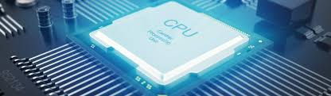
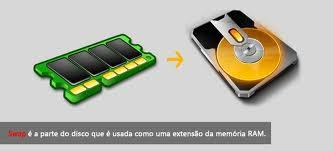
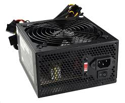
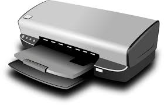
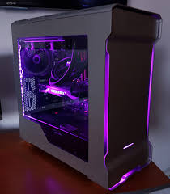
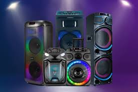
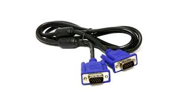
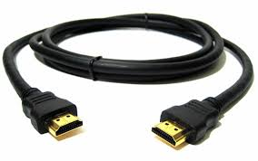
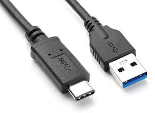

1.1 componentes internos
1.1.1 CPU

Uma CPU (Unidade Central de Processamento) é o componente fundamental de um computador, atuando como o seu "cérebro" ou "centro de controle".
1.1.2 Armazenamento

Armazenamento é o ato ou processo de guardar informações, dados ou objetos para uso ou consumo futuro, e pode ser físico, como em discos rígidos ou fitas, ou digital, como em serviços de nuvem.
1.1.3 Memória

Memória virtual é uma técnica usada pelo sistema operativo para simular mais memória RAM do que a fisicamente existente, utilizando parte do disco rígido ou SSD como extensão temporária.
1.1.4 Fonte de alimentação

Uma fonte de alimentação é um dispositivo eletrónico que converte a energia elétrica da rede (geralmente alta voltagem e corrente alternada - AC) numa forma de energia estável e adequada (baixa voltagem e corrente contínua - DC) para alimentar componentes e equipamentos eletrónicos.
1.2 Componentes externos
1.2.1 Teclado
Um teclado externo é um dispositivo periférico de hardware que se conecta a um computador (externamente) para a entrada de dados e texto.
1.2.2 Monitor de vídeo
Um monitor de vídeo é um dispositivo eletrónico de saída que exibe informações visuais, como imagens, vídeos e textos, gerados por um computador ou outro equipamento eletrónico.
1.2.3 Mouse
é um dispositivo de entrada de dados que permite interagir com um computador, movendo o cursor na tela e realizando ações através de botões e uma roda de rolagem.
1.2.4 Impressora

Uma impressora é um dispositivo eletrónico de saída que converte dados digitais de um computador ou outro dispositivo em cópias físicas, geralmente em papel, permitindo a reprodução de textos, imagens e gráficos.
1.2.5 Plotter
plotter é um dispositivo de saída que imprime ou corta, utilizando um computador para traduzir comandos em linhas e formas precisas e de alta qualidade em grandes formatos, sendo tradicionalmente usado para desenho técnico e hoje também para outros produtos.
1.2.6 Scanner
Um scanner é um dispositivo eletrónico que converte documentos físicos, imagens ou outros objetos em formato digital, salvando-os como arquivos num computador.
1.2.7 Gabinete

um compartimento físico, como o "gabinete de computador" que protege e abriga os componentes internos de um computador, ou uma "caixa elétrica" para equipamentos elétricos;
1.2.8 Web Cam
é uma pequena câmera digital que grava e transmite vídeo e áudio em tempo real através da internet, sendo essencial para videoconferências, transmissões ao vivo, reuniões online e criação de conteúdo digital.
1.2.9 Caixas de som

é um dispositivo que transforma sinais elétricos em ondas sonoras, permitindo-nos ouvir música, filmes e outros conteúdos de áudio, atuando como um transdutor.
1.2.10 Microfone
é um transdutor, um dispositivo que converte ondas sonoras em um sinal elétrico, permitindo a captura e transmissão do som para gravações, amplificação ou transmissão por meio de equipamentos como amplificadores, computadores e telefones.
1.2.11 Head Set
Um headset é um acessório que combina um par de fones de ouvido e um microfone acoplado, usado para comunicação e reprodução de áudio com as mãos livres.
1.3 Interfaces de entrada e saída
1.3.1 Interfaces sem fio
é um componente eletrónico que permite a comunicação entre dispositivos sem a necessidade de cabos físicos, utilizando tecnologias como Wi-Fi, Bluetooth ou NFC para transmitir dados através de ondas de rádio ou outras formas de radiação eletromagnética.
1.3.2 Áudio
Áudio é a representação de qualquer som que podemos ouvir, seja música, fala ou ruído, através de um sinal sonoro que pode ser analógico ou digital, capturado, transmitido e reproduzido por aparelhos eletrónicos.
1.3.3 Rede (Ethernet)
é um padrão tecnológico para conectar dispositivos numa rede local (LAN) através de cabos físicos, como os cabos RJ45, permitindo o compartilhamento de informações e o acesso à internet.
1.3.4 VGA

VGA significa Video Graphics Array e refere-se a um padrão de interface analógica e um conector de 15 pinos usados para conectar computadores a monitores e projetores.
1.3.5 HDMI

é um cabo e uma tecnologia que transmite sinais digitais de áudio e vídeo de alta qualidade entre dispositivos eletrônicos.
1.3.6 USB

é um padrão de tecnologia que permite a conexão, comunicação e transferência de dados e energia entre computadores e diversos dispositivos eletrónicos, como ratos, teclados, impressoras e smartphones.